Introduction
The CEO and CFO of a major brewing company have provided our team with a dataset for nationwide statistics of beers and breweries. Our job as data scientists are to perform a thorough investigation into this data.
Click here for presentation!
Interactive App
How Many Breweries are Present in Each State?
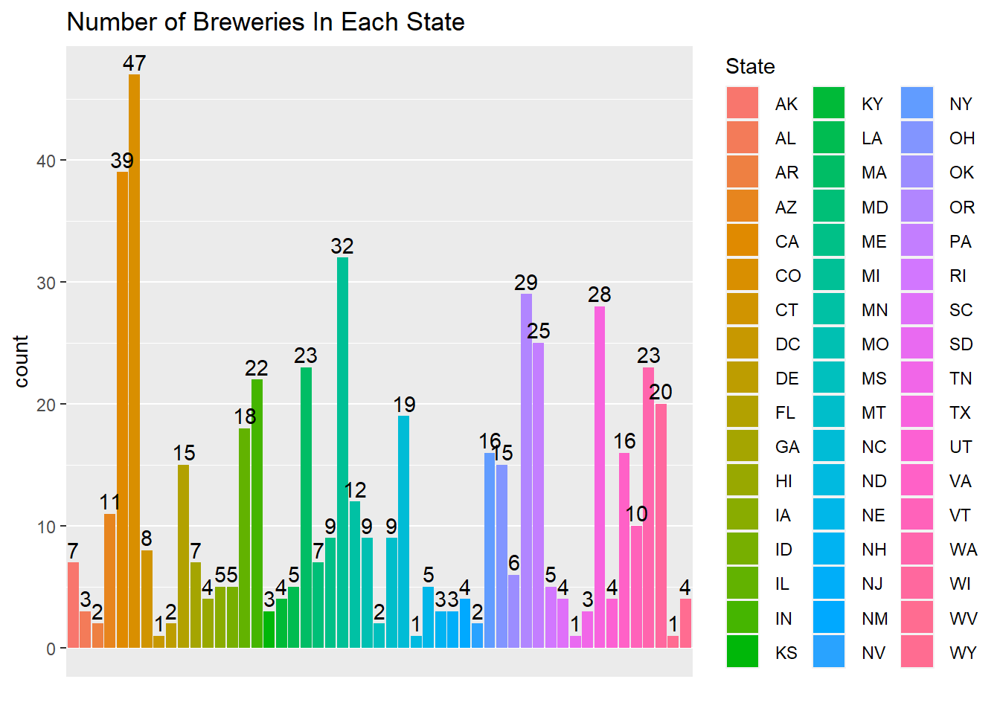
Building a Brewery Count Heatmap
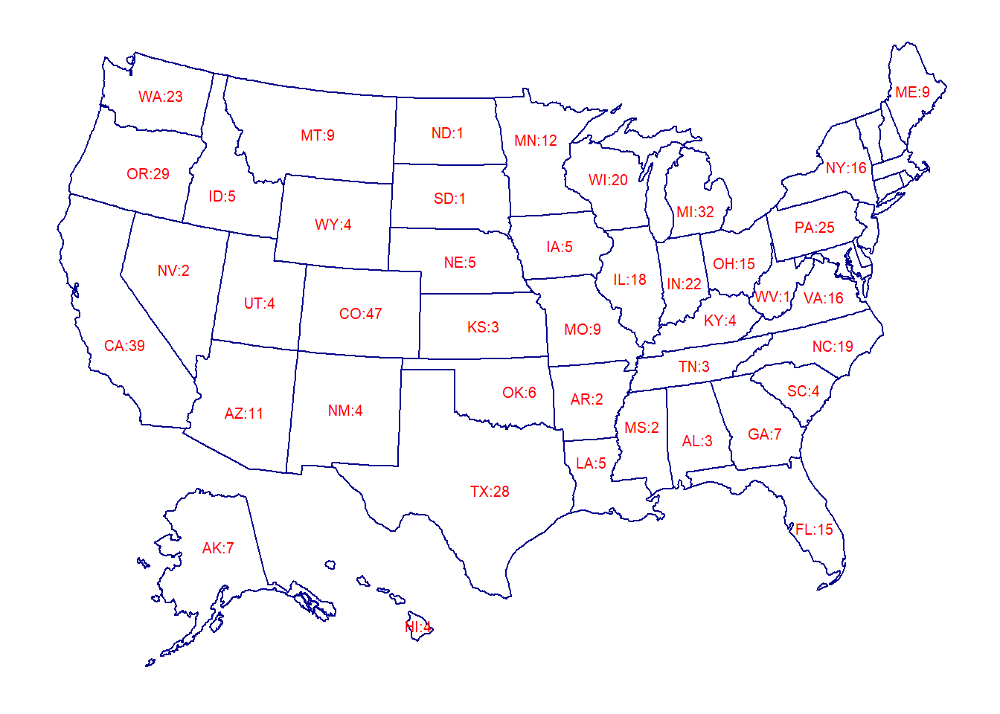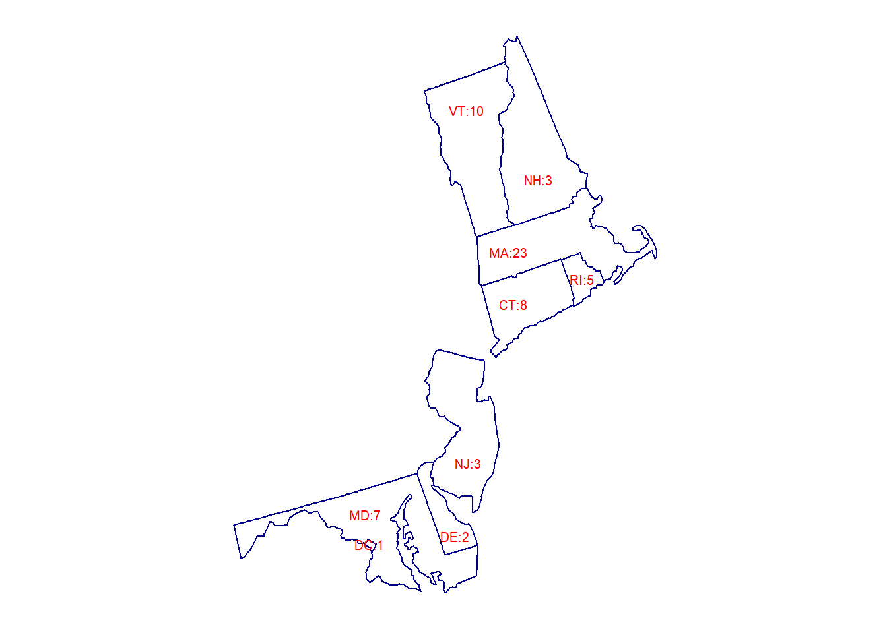
Brewery Density versus Population
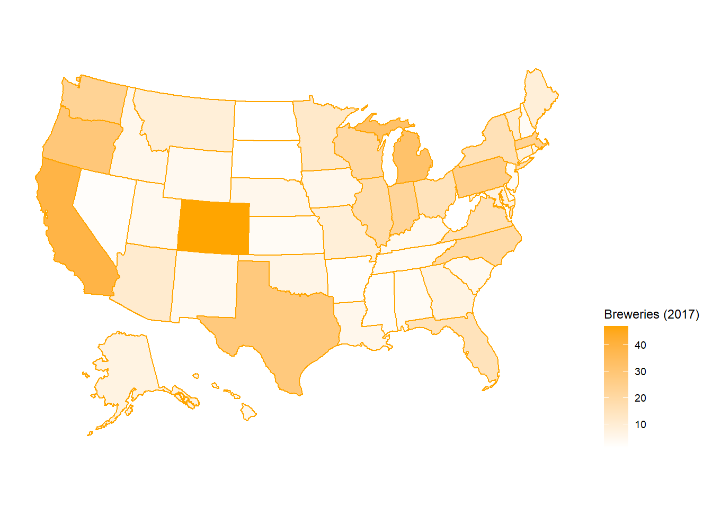
The Missing Values In Each Column
From the data provided, 62 values are missing in the ABV column, and 1005 are missing in the IBU column. In order to move forward with the investigation we needed to impute these values.
First we started by visualizing the data. As shown in the first graph below the distribution of ABV is fairly normal.
Based on this we decided to use the mean of the data set in order to replace the missing values.
Next we generated a graph of the IBU data. As is shown in the graph the data is right skewed.
Therefore we chose the median of IBU as a replacement for the missing values since the median is robust to skewness.
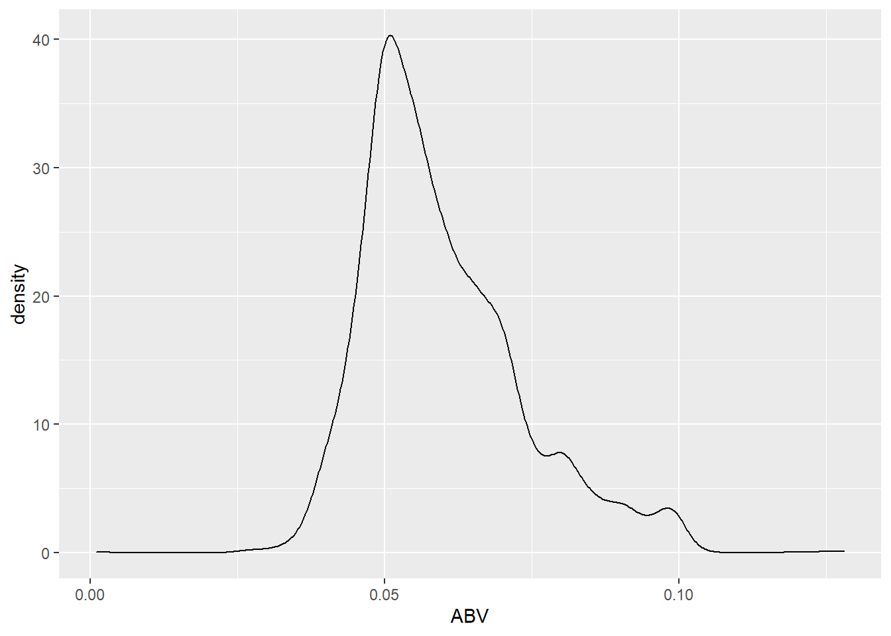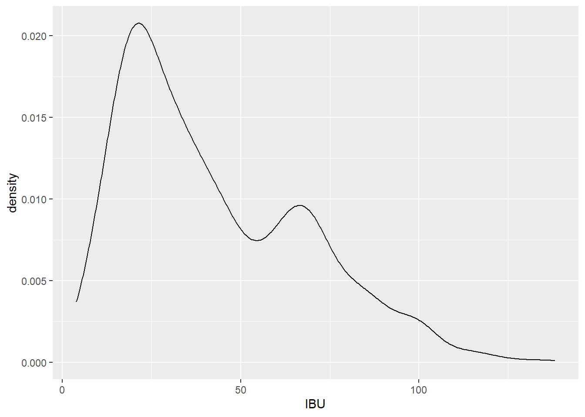
Medians for ABV and IBU of Each State
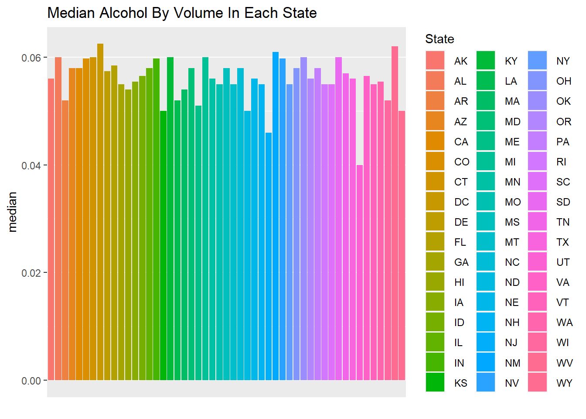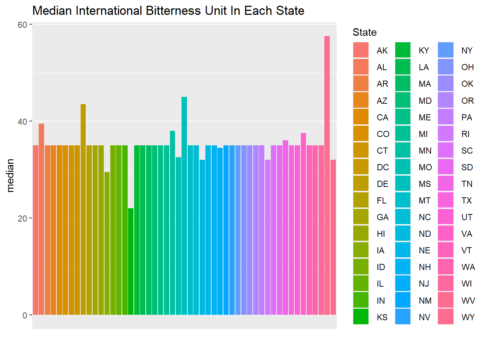
Summary and Distribution of the ABV Variable
ABV has a minimum of 0.001, a maximum of 0.128, a mean of 0.060, and a median of 0.057.
Its standard deviation is 0.013 and its 1st and 3rd quarters are 0.050 and 0.067, respectively.
The distribution of ABV is roughly normal based on the histogram, and both the scatterplot and boxplot show lots of variance and outliers.
 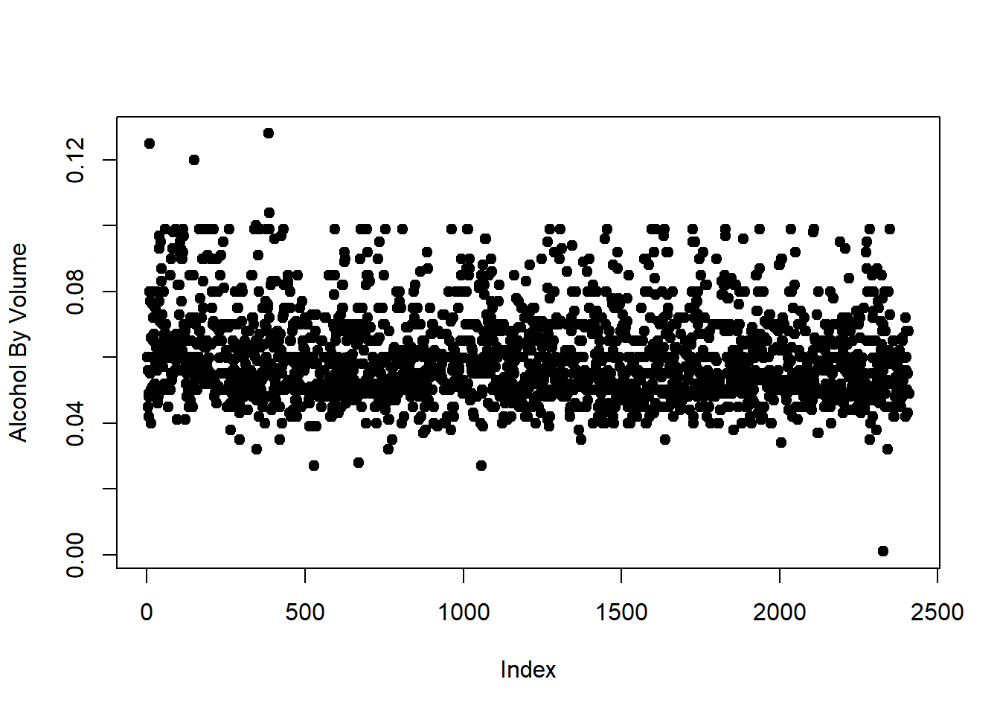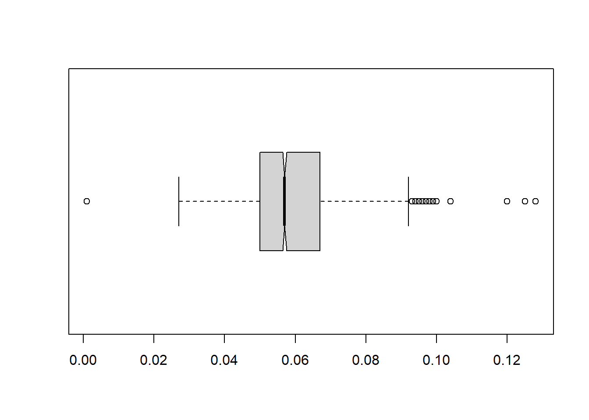
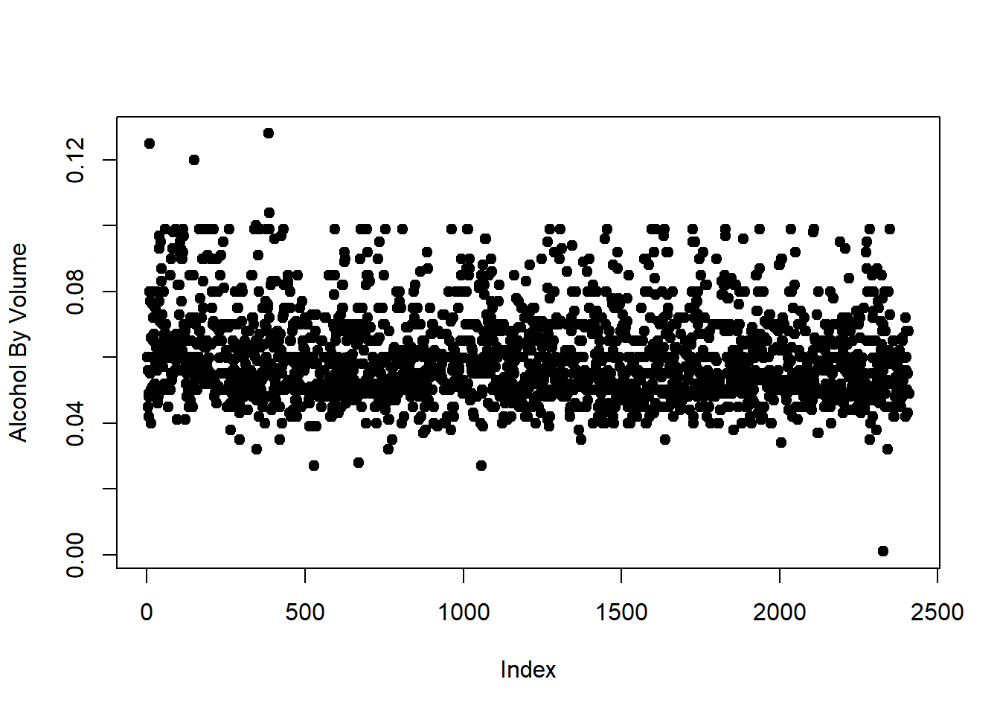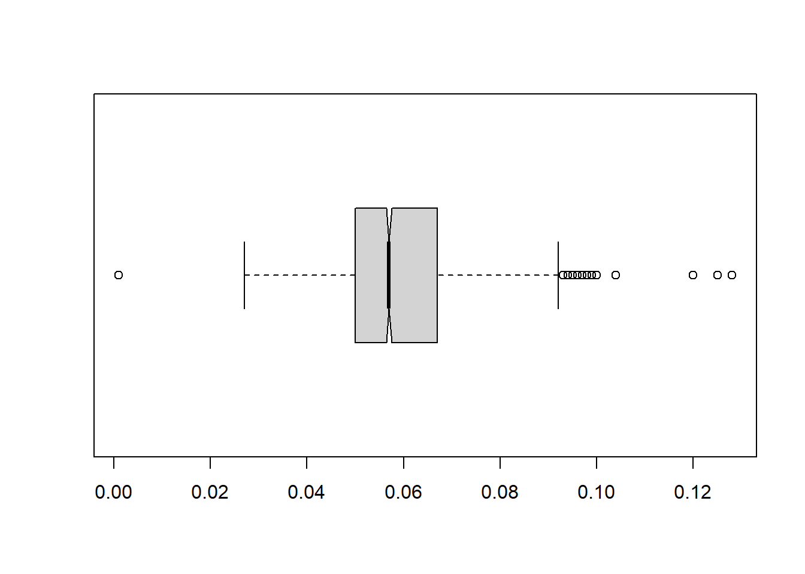
Relationship Between Bitterness and Alcoholic Content
The relationship is fairly linear, with a rise in IBU corresponding in a rise in ABV.
With an r value of 0.51 we can consider this as a moderately correlated relationship.

Knocking your socks off
This pie chart shows the 10 most popular styles of beers.
First that 9 of the styles from the top 10 are ales.
Second, 56% of all beers are one of these top 10 styles.
Third, 27% of all beers are either an APA or an American IPA.
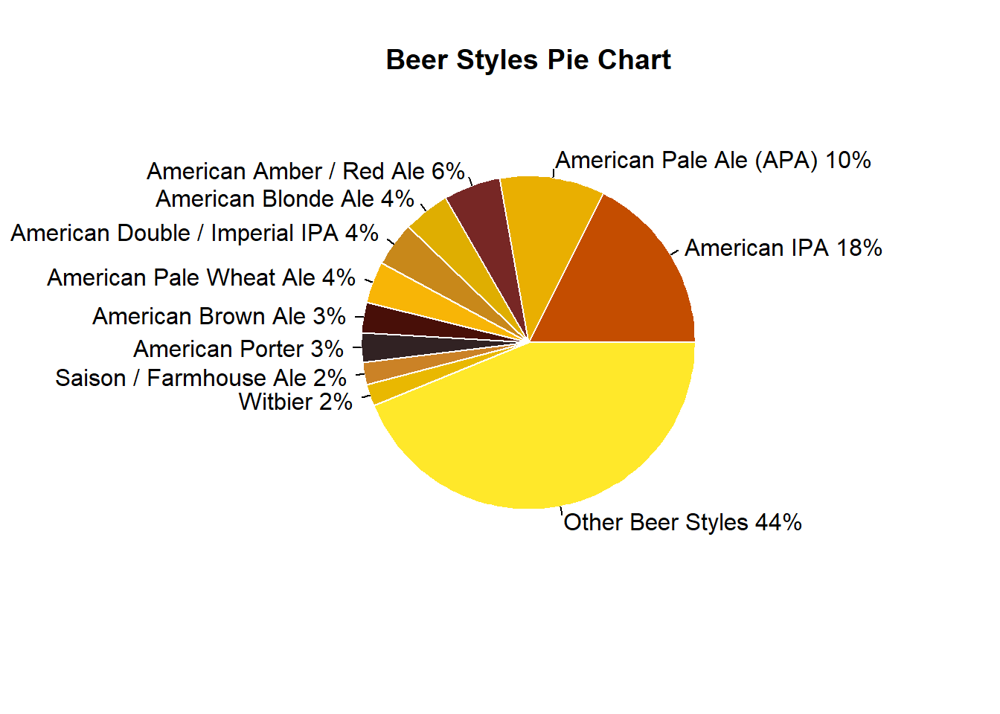
Conclusion
Thank you for your time. In this investigation we have covered; brewery count per state, beer descriptors per state, nationwide statistics for ABV, the relationships between ABV and IBU, and the top 10 beer styles. Some notable highlights from this investigation are:
- In the brewery density map we saw that there are a number of states that have a low density of breweries for their population.
- When looking at beer descriptors per state we noted that
- Half of all beers were between 0.05 ABV and 0.067 ABV
- ABV and IBU had a moderately linear relationship
- 9 out of the top 10 beer styles were Ale’s
Please let us know if you have any questions.
- Duy Nguyen
- Garrett Shankel